토양환경기사 (2014-03-02 기출문제)
1과목: 토양학개론
1. 토양생성 작용에서 laterite화 작용과 관련이 가장 많은 것은?
- 철 및 알루미늄 산화물
- 아연 및 망간 산화물
- 칼슘 및 마그네슘 산화물
- 크롬 및 나트륨 산화물
(정답률: 89%)

2. 토양내 유기물의 농도가 50mg/kg이었다. 1시간 후의 유기물 농도가 40mg/kg 이었다면 4시간 후의 유기물 농도 (mg/kg)는?(오류 신고가 접수된 문제입니다. 반드시 정답과 해설을 확인하시기 바랍니다.)
- 10
- 15
- 20
- 25
(정답률: 65%)
3. 토양의 나트륨의 흡착비(SAR)식으로 옳은 것은?(오류 신고가 접수된 문제입니다. 반드시 정답과 해설을 확인하시기 바랍니다.)
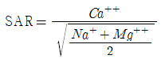
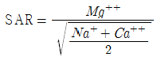
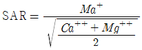
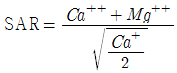
(정답률: 87%)
4. 토양의 침식(erosion)에 대한 설명으로 옳지 않는 것은?
- 지질침식은 굴곡이 심한 자연지형을 고르고 평평하게 하는 과정이다.
- 가속침식이 일어나는 지역은 토양이 풍화나 퇴적에 의하여 새롭게 생겨나는 것보다 빠른 속도로 침식된다.
- 수식은 토괴로부터 토양입자의 분산탈린, 분산 탈린된 입자들의 이동, 보다 낮은 곳으로 운반된 입자들의 퇴적과 같은 3단계 과정을 거쳐 일어난다.
- 풍식은 면상침식, 세류침식, 협곡침식의 세 가지로 구분할 수 있다.
(정답률: 75%)
5. 아연 광산에서 주로 발견되며 대표적으로 이따이따이병을 유발하는 중금속은?
- 납
- 수은
- 불소
- 카드뮴
(정답률: 95%)
6. DNAPL (Dense Nonaqueous Phase Liquid)에 해당하지 않는 오염물질은?
- PCE
- TCE
- 1 1, 1-TCA
- Phenanthrene
(정답률: 80%)
7. 토양의 양이온교환용량(CEC)에 관한 설명으로 옳지 않는 것은?
- 점토질의 함량이 높은 토양은 CEC가 높다.
- Kaolinite는 CEC가 상대적으로 높은 점토광물이다.
- 토양의 양이온교환용량은 무기 및 유기콜로이드가 흡착할 수 있는 양이온의 총량이다.
- 모래와 미사는 표면적이 매우 적어 양이온교환용량에 거의 기여하지 않는다.
(정답률: 80%)
8. 어느 지역 토양시료에 대해 공극률 측정결과가 20% 였다. 시료 내 수분부피와 공기부피는 각각 10cm3, 5cm3 였다면 현장에서 채취한 토양시료의 전체부피(cm3)는? (단, 공극은 수분과 공기로만 차 있다고 가정함)
- 75
- 85
- 95
- 1⑤
(정답률: 88%)
9. 단위체적의 대수층 내에 저유된 지하수와 대수층으로부터 외부로 뽑아낼 수 있는 지하수량과의 비를 나타내는 용어는?
- 비양수율(specific reuse)
- 간극률(porosity)
- 비산출률(specifiic yield)
- 비보유율(specific retention)
(정답률: 95%)
10. 염류화 된 토양의 형태 중 Saline soil 에 관한 설명으로 옳은 것은?(오류 신고가 접수된 문제입니다. 반드시 정답과 해설을 확인하시기 바랍니다.)
- 토양입자에 흡착되어 있는 나트륨의 양이 적은 염류토양이다.
- 점토성분이 많고 유기물 함량이 높은 토양에서 나타나기 쉽다.
- 무기에 일어나는 염류집적으로 염류토양이 형성된다.
- 강알칼리성을 나타내며 알칼리 토양이라고도 한다.
(정답률: 50%)
11. 토양의 비열과 용적열용량에 관한 설명으로 옳지 않는 것은?
- 토양의 비열은 토양 1g의 온도를 1℃ 높이는데 필요한 열량이다.
- 토양의 비열이 크면 온도의 상승 및 하상이 느리다.
- 토양내 점토의 함량이 많을수록 용적열용량이 작아진다.
- 토양의 용적열용량을 결정하는데 중요한 것은 토양의 수분상태이다.
(정답률: 94%)
12. 다음 점토 광물(clay minerals) 중 2 : 2형(2 : 1 : 1 형)의 대표적인 것은?
- 카올리나이트(kaolinite)
- 할로이사이트(halloysite)
- 몬모릴로나이트(montmorillonite)
- 클로라이트(chlorite)
(정답률: 84%)
13. 토양오염은 토양오염물질의 특성에 따라 오염의 양상 등이 달라진다. 토양 내 유기오염물질과 관련된 특성(인자)과 가장 거리가 먼 것은?
- 용해도적
- 옥탄올/물 분배계수
- 증기압
- 분해상수
(정답률: 90%)
14. 토양공기에 관한 설명으로 옳지 않은 것은?
- 심층토가 표층토에 비하여 미세공극이 적어 산소의 공급이나 이산화탄소의 제거가 우너활하지 못한다.
- 토양공기 중의 이산화탄소가 많아지는 양은 산소가 줄어드는 양과 비례한다.
- 토양의 깊이가 깊을수록 산소함량이 적어지는 정도는 토양공극의 특성과 밀접한 관계가 있다.
- 토양공기 중의 질소함량은 대기 중의 함량가 비슷하다.
(정답률: 46%)
15. 트리클로로에틸렌(TCE)이 유출되어 토양과 지하수를 오염시켰다. 오염 현상을 이해하기 위하여 헨리의 법칙(Henry 's law)이 사용될 수 있는 경우로 가장 옳은 것은?
- 토양 공극사이의 TCE가 기체(가스상)로 이동하는 현상
- 토양 공극사이 가스상 TCE가 지하수로 용해되는 현상
- 지하수내 용해된 TCE가 확산되는 현상
- 지하수내 용해된 TCE가 토양입자에 흡착되는 현상
(정답률: 65%)
16. 지하수 상류와 하루 두 지점의 수두차 1.5m, 두 지점 사이의 수평거리 500m, 투수계수 250m/day 일 때 대수층의 단면적 4m2인 지하수의 유량은? (단, Darcy 법칙 적용, 기타사항은 고려하지 않음)
- 1.5m3 · day-1
- 3.0m3 · day-1
- 4.5m3 · day-1
- 6.0m3 · day-1
(정답률: 73%)
17. 다음 중 토양 수직단면을 분류하는 성층구조에서 가장 상층에 존재하는 토양층위는?
- A1
- B1
- 01
- C
(정답률: 97%)
18. 대수층의 비보유율(Sr)이 0.2이고, 공극률이 0.3일 때, 비산출율(Sy)는? (단, 모래 내에 지하수의 중력 배수 기준)
- 0.1
- 0.15
- 0.2
- 0.5
(정답률: 90%)
19. 포화대의 수리지질학적인 특성을 지하수의 흐름특성과 저유특성으로 대별할 때 흐름특성으로 중요한 인자는?
- 투수량계수
- 비산출률
- 공극률
- 비저유계수
(정답률: 60%)
20. 토양에서 일어나는 양이온교환반응의 중요성(농업생산성과관련)에 관한 설명으로 옳지 않는 것은?
- 치환성 K, Ca, Mg 등은 식물영양소의 주된 공급원이다.
- 산성 토양의 pH를 높이기 위한 석회요구량은 CEC가 클수록 적어진다.
- 중금속을 흡착하여 지하수 및 지표수로의 이동을 억제한다.
- 토양에 비료로 사용한 K+, NH4+ 등은 토양에서 이동성이 급격하게 감소된다.
(정답률: 76%)
2과목: 토양 및 지하수 오염조사기술
21. 토양 중 불소의 자외선/가시선 분광법 분석에 관한 내용으로 옳지 않은 것은?
- 불소가 지르코니움-발색시약과의 반응으로 진홍색의 ZrF62-를 형성한다.
- 불소이온과 지르코니움 이온 사이의 반응 속도는 반응 혼합물의 산도에 따라 달라진다.
- 다량의 염소이온이 함유되어 있으면 과량의 Ag+이온을 첨가하여 염소를 제거한다.
- 이 시험방법에 따라 시험할 경우 토양 중 정량한계는 10 mg/kg 이다.
(정답률: 78%)
22. 다음은 수소화물생성-원자흡수분광광도법을 적용한 비소 측정에 관한 설명이다. ( )안에 옳은 내용은?
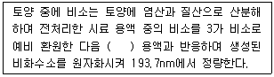
- 수소화염화주석나트륨
- 수소화이질소나트륨
- 수소화붕소나트륨
- 수소화이염화나트륨
(정답률: 88%)
23. 구리(원자흡수분광광도법) 측정 시 정밀도 기준으로 옳은 것은?
- 정밀도(% RSD) 15% 이내
- 정밀도(% RSD) 20% 이내
- 정밀도(% RSD) 25% 이내
- 정밀도(% RSD) 30% 이내
(정답률: 91%)
24. 다음은 토양 중 석유계총탄화수소(TPE: 기체크로마토그래피) 시험방법에 대한 설명이다. 틀린 것은?
- 비등점이 높은(150℃~500℃) 유류에 속하는 제트유ㆍ등유ㆍ경유ㆍ벙커C유ㆍ윤활유ㆍ원유 등의 측정에 적용한다.
- 시료를 디클로로메탄으로 추출하여 정제한 후 기체크로마토그래피에 따라 짝수의 노말알칸(C8~C40) 표준물질의 총면적과 시료 피크의 총면적을 비교하여 석유계총탄화수소를 정량한다.
- 정량한계는 석유계총탄화수소로 10mg/kg 이다.
- 채취한 시료를 즉시 시험할 수 없는 경우에는 염산(시료량의 2% 이내)으로 pH 2로 하여 보관한다.
(정답률: 59%)
25. 아래 식 중 토양 중 수분 함량(%)을 계산하는 식으로 옳은 것은? (단, W1=증발접시 무게, W2=건조 전 시료와 증발접시의 무게, W3=건조 후 시료와 증발접시의 무게, 무게는 g 기준)
- [(W2-W3)/(W2-W1)]×100
- [(W2-W3)/(W1-W2)]×100
- [(W2-W1)/(W2-W3)]×100
- [(W2-W1)/(W3-W2)]×100
(정답률: 91%)
26. 저장물질이 없는 누출검사 대상 시설에 대한 비파괴검사 시험법 중 초음파 두계 측정은 지하매설저장시설에 있어서는 동체(Shell) 각 플레이트(Plate)의 상하좌우 4방향과 경판(Head Plate)의 상하좌우 및 중앙부 등 5개 지점에 대하여, 옥외저장시설에 있어서는 특정한 측정지점에 대하여 초음파 두께측정기로 두께를 측정하여야 한다. 다음의 옥외저장시설의 측정지점에 관한 내용 중 틀린 것은?
- 에뉼러판 : 옆판내면으로부터 탱크중심방향으로 0.5m 간격마다의 범위에서 원주방향으로 2m 이하의 간격
- 누설자장 등을 이용하여 점검을 실시한 밑판 및 에뉼러판 : 1매당 2개 지점
- 밑판(구형탱크는 본체전부를 밑판으로 보며, 지중탱크의 옆판 중 지반면 하에 매설된 부분은 밑판으로 본다) : 1매당 3개 지점
- 보수 중 덧붙인 판 또는 교체한 판 : 1매당 1개 지점
(정답률: 71%)
27. 기체크로마토그래피에 의한 페놀류 분석에 관한 설명 중 옳지 않은 것은?
- 토양 중 페놀 및 펜타클로로페놀을 아세톤/노말헥산(1 : 1)으로 추출한다.
- 불꽃이온화검출기에 검출되는 정량한계는 페놀이 0.1mg/kg 이다.
- 디클로로메탄과 같이 머무름 시간이 짧은 화합물은 용매의 피크와 겹쳐 분석을 방해할 수 있다.
- 이 시험방법은 토양 중 페놀 및 펜타클로로페놀의 분석에 적용된다.
(정답률: 55%)
28. 저장물질이 있는 누출검사대상시설-기상부의 시험법에서 사용하는 검사기기 및 기구 중 감압장치(액체를 뽑아내는 방식 기준)에 해당되지 않는 것은?
- 이젝터
- 송유설비
- 가변식 펌프
- 고체 급유설비
(정답률: 69%)
29. 저장물질이 없는 누출검사대상시설 – 가압시험법을 적용하여 누출 검사를 할 때 주의 사항과 가장 거리가 먼 것은?
- 가압으로 배출된 가스를 별도의 안전한 공간으로 이동시킨다.
- 기상변화가 심할 때는 시험을 실시하지 않는다.
- 누출여부판단을 위한 누출검사대상시설의 가압을 위해서 과도한 속도로 압력이 상승되지 않도록 한다.
- 시험기간 동안 화기의 사용을 금한다.
(정답률: 83%)
30. 다음 총칙에 관한 내용으로 틀린 것은?
- 분석용 저울은 1.0 mg까지 달 수 있어야 한다.
- '냄새가 없다' 라고 기재한 것은 냄새가 없거나 또는 거의 없는 것을 표시하는 것이다.
- 감압 또는 진공이라 함은 따로 규정이 없는 한 15mmHg 이하를 말한다.
- 시험에 사용하는 물은 따로 규정이 없는 한 정제수 또는 탈염수를 말한다.
(정답률: 77%)
31. 정도보증/정도관리에 적용되는 감응계수의 산정식으로 옳은 것은? (단, C : 검정곡선 작성용 표준용액의 농도, R : 반응값)
- 감응계수 = C / R
- 감응계수 = R / C
- 감응계수 = R × C
- 감응계수 = R2 × C
(정답률: 77%)
32. pH 표준액의 pH 값이 맞게 연결된 것은? (단, 온도는 섭씨 15도)
- 프탈산염 표준액 : pH 4.00
- 인산염 표준액 : pH 9.27
- 탄산염 표준액 : pH 4.90
- 수산염 표준액 : pH 12.81
(정답률: 65%)
33. 시안 – 자외선/가시선 분광법 측정에 대한 설명으로 틀린 것은?
- 토양 중 시안의 정량한계는 0.01mg/kg 이다.
- 시안화합물을 측정할 때 방해물질들은 증류하면 대부분 제거된다.
- 황화합물이 함유된 시료는 아세트산 아연 용액(10%) 2mL를 넣어 제거한다.
- 다량의 자벙성분을 함유한 시료는 pH4 이하로 조절한 후 노말헥산으로 추출하여 제거한다.
(정답률: 67%)
34. 저장물질이 없는 누출검사대상시설 – 가안시험법에 적용되는 검사기기 및 기구 중 안전밸브에 관한 기준으로 옳은 것은?
- 0.5kgf/cm2이하에서 작동되어야 한다.
- 0.7kgf/cm2이하에서 작동되어야 한다.
- 0.9kgf/cm2이하에서 작동되어야 한다.
- 1.2kgf/cm2이하에서 작동되어야 한다.
(정답률: 85%)
35. 다음은 수분함량 측정에 대한 설명이다. ( )에 알맞은 내용은?
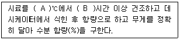
- A : 110~115, B : 2
- A : 110~115, B : 4
- A : 1⑤~110, B : 2
- A : 1⑤~110, B : 4
(정답률: 86%)
36. 토양오염공정시험기준의 규정에 의한 누출검사대상시설에 관한 내용으로 틀린 것은?
- '부속배관' 이란 누출검사대상시설에 용접 또는 나사조임방식으로 직접 연결되는 배관을 말한다.
- '배관접속부'란 누출검사대상시설과 부속배관, 부속배관과 배관을 연결하기 위하여 용접접한 또는 나사조임방식 등으로 접속한 부분을 말한다.
- '지하매설배관'이란 부속배관의 경로 중, 지하에 매설되어 있으나 누출여부를 육안으로 직접 확인할 수 있는 배관을 말한다.
- '누출검지관'이란 액체의 누출여부를 누출검사대상시설 외부에서 직접 또는 간접적으로 확인하기 위해 설치된 관을 말한다.
(정답률: 91%)
37. 정량한계 산정 식으로 옳은 것은? (단, S : 표준편차, X : 평균값 )
- 정량한계 = 3.3 × S
- 정량한계 = (10 × X) / S
- 정량한계 = (3.3 × X) / S
- 정량한계 = 10 × S
(정답률: 86%)
38. 1ppb와 같은 농도는?
- 1 μg/m3
- 1 mg/kg
- 0.001 %
- 0.001 ppm
(정답률: 91%)
39. 배관시설-가압 및 미감압시험법에 사용되는 검사기기 및 기구에 관한 내용으로 틀린 것은?
- 가압장치 : 가압 시 시험압력까지 이르도록 조정되는 것 이어야 한다.
- 사용가스 : 불활성가스를 가압매체로 사용한다.
- 안정장치 : 시험압력의 1.5~1.8배 범위에서 작동할 수 있는 안전밸브를 갖추어야 한다.
- 압력계 : 최소눈금이 1mmH2O를 읽을 수 있는 정밀도를 가진 압력계 또는 최소눈금이 시험압력의 5% 이내이고, 이를 읽고 측정압력의 기록이 가능한 압력계 이어야 한다.
(정답률: 79%)
40. 다음은 토양시료의 채취방법에 대한 설명이다. ( )에 옳은 내용은? (단, 토양오염관리대상시설지역 기준)
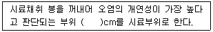
- ±10
- ±15
- ±20
- ±30
(정답률: 91%)
3과목: 토양 및 지하수 오염정화 기술
41. 지하저장창고로부터 디젤이 유출되어 토양이 오염되었다. 오염부지평가결과 오염누출지역 토양의 단위용적 밀도가 1.8g/cm3이며 오염농도 범위가 [20m × 25m × 3m]이다. 토양세척으로 처리하고자 할 때 처리해야 할 토양의 양(kg)은?
- 2.7 × 103 kg
- 2.7 × 104 kg
- 2.7 × 105 kg
- 2.7 × 106 kg
(정답률: 46%)
42. 토양증기추출법으로 오염토양을 복원하는 경우, 단일 추출정으로부터 배출되는 가솔린의 평균농도가 추출공기 1.0L 당 1.0 mg 이고, 하루에 100m3 의 공기가 추출된다. 오염토양 내에 누출된 가솔린의 총량이 5kg이고, 누출된 가솔린이 모두 증기추출로만 제거된다고 가정한다면 오염 가솔린을 모두 제거하는데 걸리는 시간은?
- 10일
- 25일
- 50일
- 100일
(정답률: 67%)
43. 토양세척법을 적용할 경우에는 토양의 입도분포가 매우 중요하다. 어느 오염토양의 입도분포곡선에서 10%, 30%, 60% 통과백분율에 해당하는 입자 직경이 각각 0.10mm, 0.30mm 및 0.60mm인 경우, 곡률계수 (Cz)는?
- 약 1.2
- 약 1.5
- 약 1.7
- 약 1.8
(정답률: 82%)
44. 매립지 최종 복토층의 가스 배제층 설치에 따른 이점으로 틀린 것은?
- 상부 식생대층의 식물 및 미생물에 대한 독성 영향을 저감시킨다.
- 가스압에 의한 차수층의 균열발생의 위험성을 감소 시킨다.
- 매립가스를 포집하여 에너지원으로 사용할 수 있다.
- 매립가스의 지속적 대기 배출로 신속한 매립지의 안정화를 기한다.
(정답률: 63%)
45. 동전기정화기법에서는 토양 내에 전기를 가하게 되면 동전기의 현상에 의하여 토양내의 오염수, 오염물질, 오염입자가 이동하게 되는데 이때 발생되는 현상과 가장 거리가 먼 것은?
- 전기투석
- 전기이동
- 전기영동
- 전기삼투
(정답률: 79%)
46. TCE로 오염된 지하수를 양수하여 포기조 내에서 공기분산법으로 제거하는 경우, 포기조 부피가 750m3인 처리장에 1일 3000m3의 오염 지하수가 유입된다면 포기시간은?
- 4시간
- 6시간
- 8시간
- 10시간
(정답률: 56%)
47. 독립영양미생물(화학합성 자가영양)의 탄소원과 에너지원을 알맞게 짝지은 것은?
- CO2 - 무기물의 산화환원반응
- CO2 - 빛
- 유기탄소 – 무기물의 산화환원반응
- 유기탄소 – 빛
(정답률: 77%)
48. 다음 중 생분해가 어려운 물질의 일반적인 조건(특성)과 가장 거리가 먼 것은?
- 원자의 전하차가 적은 화합물
- 물에 대한 용해도가 낮은 화합물
- 가지구조가 많은 화합물
- 분자내에 많은 수의 할로겐원소를 함유하는 화합물
(정답률: 84%)
49. 원위치 air-sparging 기술에 관한 설명으로 옳지 않은 것은?
- SVE 에 비하여 에너지 소비량이 많고 오염물의 확산이나 dead zone의 우려가 크다.
- 비포화대에서 사용하는 SVE와 매우 유사하다.
- 포화대 내에 공기를 주입하여 지하수를 폭기시키므로 VOC를 휘발시켜 제거하는 기술이다.
- 공기펌프나 송풍기가 연결된 주입정으로 공기가 주입되어 대수층을 따라 수직으로 이동한 후 압력이 높은 추출정으로 VOC를 배출한다.
(정답률: 47%)
50. 열탈착 기술에 관한 설명으로 옳지 않은 것은?
- 탈착속도는 유기물질의 화학적 구성에 큰 영향을 받으며 대개 분자량이 클수록 빠르다.
- 휘발성 유기화합물(VOCs)뿐만 아니라 준휘발성 유기화합물(SVOCs)의 제거도 가능하다.
- 유기염소 및 유기인 살충제 처리시 푸란과 다이옥신류를 생성하지 않는다.
- 열탈착 공정에서 발생하는 가스량은 같은 용량의 소각공정에 비해 상대적으로 적다.
(정답률: 73%)
51. 호기성 생분해 기술을 적용하낟면 2mg/L의 벤젠을 생분해하는데 필요한 이론산소의 양(농도)은? (단, 벤젠의 화학식은 C6H6이다.)
- 약 4.6 mg/L
- 약 5.4 mg/L
- 약 6.2 mg/L
- 약 7.6 mg/L
(정답률: 52%)
52. 수리전도도가 불량하고 과잉 압밀 된 오염지반에 압축공길르 주입하여 여타 지중 정화기술 적용시 오염물 처리 및 추출효율을 증대시키는 방법은?
- Pneumatic fracturing
- Co-metabolic
- Precipitation
- Direction wall
(정답률: 88%)
53. 실험실에서의 예비실험 결과 독성물질의 1차 반응 분해 상수가 0.03 day-1임을 알았다. 이 물질의 반감기와 가장 가까운 것은? (단, 자연지수 기준)
- 약 23일
- 약 26일
- 약 28일
- 약 30일
(정답률: 71%)
54. 매립지 토양층에서 발생하는 혐기성분해에 의해 glucose(C6H12O6)가 완전 분해된다면 100g 의 glucose가 완전히 분해되어 발생되는 토양층에서의 메탄가스 용적은? (단, 토양층에서 1 mole의 메탄가스의 용적은 25L로 가정한다.)
- 약 22 L
- 약 32 L
- 약 36 L
- 약 42 L
(정답률: 37%)
55. 토양이나 지하수를 정화하는 기술인 식물정화법 중 식물에 의한 추출을 효과적으로 이룰 수 있는 대표 식물종과 가장 거리가 먼 것은? (단, 중금속 기준)
- 인도겨자
- 해바라기
- 버드나무
- 보리
(정답률: 70%)
56. 토양증기추출법(SVE : Soil Vapor Extraction)의 장단점으로 틀린 것은?
- 투과성이 낮은 토양에서는 효과가 적다.
- 짧은 시간에 설치할 수 있다.
- 지반구조의 복잡성으로 총 처리기간을 예측하기 어렵다.
- 추출된 기체 처리를 위한 대기오염방지 시설이 필요 없다.
(정답률: 78%)
57. 오염토양의 불용화를 위해 화학적 처리를 하고자 할 때 오염물질과 그 처리에 사용되는 물질에 대한 연결로 가장 적합한 것은?
- 시안화합물 – 차아염소산나트륨(NaOCI)
- 6가 크롬 – 염화철(FeCl2)
- 비소화합물 – 황산화철(FeSO4)
- 수은화합물 – 황산나트룸(Na2SO4)
(정답률: 56%)
58. 공기분사법(air sparging)의 적용에 관한 설명으로 옳지 않은 것은?
- 오염물질의 휘발성이 작으면 정화효율이 낮다.
- 오염확산의 위험이 적은 피압대수층에 적용이 용이하다.
- 공기주입으로 인한 기질의 변화로 주변 구조물의 안정성에 영향을 줄 수 있다.
- 오염물질의 호기성 생분해능이 높을수록 적용이 유리하다.
(정답률: 54%)
59. 다음 중 토양세척공정에 관한 설명으로 옳지 않은 것은?
- 외부환경의 영향이 크며 자체적 조건조절이 가능한 개방형 공정이다.
- 오염된 처리수는 폐수처리시설에서 정화된 후 재순환 되는 것이 일반적이다.
- 토양세처그이 효과를 결정짓는 것은 물지르이 종류에 의한 차이보다 토양의 성상에 따른 영향이 크다.
- 오염물질의 물리화학적 특징 중 세척효율을 높일 수 있는 요인으로는 수용성과 휘발성이다.
(정답률: 78%)
60. 바이오필터의 운전에 따른 문제점으로 틀린 것은?
- 생물학적 처리와 물리학적 처리의 동시 진행을 위한 별도의 포집가스 처리시설이 필요하다.
- 생물상의 온도가 미생물의 활동에 의해 상승함에 따라 유입가스에 비해 유출가스 중의 수분함량이 증가하여 수분증발이 일어나 주기적인 수분공급이 필요하다.
- 지간이 지남에 따라 충전층이 압밀되어 바이오필터를 통과하는 배가스의 압력손실이 점차 커진다.
- 오염물질 분해반응에 따라 pH가 낮아지는 현상이 발생한다.
(정답률: 52%)
4과목: 토양 및 지하수 환경관계법규
61. 특정토양오염관리대상시설의 변경신고 사유로 틀린 것은?
- 사업자의 명칭 또는 대표자가 변경되는 경우
- 특정토양오염관리대상시설의 조업이 정지되거나 일부 폐쇄하는 경우
- 특정토양오염관리대상시설을 증설 또는 교체하거나 토양오염방지시설을 변경하는 경우
- 특정토양오염관리대상시설에 저장하는 오염물질을 변경하는 경우
(정답률: 52%)
62. 토양보전대책지역 지정표지판에 기록할 내용과 가장 거리가 먼 것은?
- 지정일자
- 토양보전대책지역에서 제한되는 행위
- 지정 기관 및 전화번호
- 지정목적
(정답률: 71%)
63. 지목이 임야(2지역)인 경우 6가 크롬의 토양오염대책 기준(mg/kg)으로 옳은 것은? (단, 측량ㆍ수로조사 및 지적에 관한 법률 기준)
- 15
- 25
- 35
- 45
(정답률: 42%)
64. 다음은 토양관련 전문기관의 지정기준에 관한 내용이다. ( )안에 옳은 내용은? (단, 토양오염조사기관, 기술인력 기준)
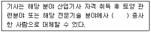
- 5년
- 4년
- 3년
- 2년
(정답률: 84%)
65. 다음은 토양오염검사 수수료의 시료채취비에 관한 내용이다. ( )안에 옳은 내용은?
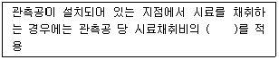
- 10%
- 15%
- 25%
- 50%
(정답률: 59%)
66. 토양정화업의 등록요건 중 시설, 장비에 관한 기준으로 틀린 것은?
- 반입정화 시설 : 정화시설 400제곱 미터 이상, 보관시설 400제곱미터 이상
- 시료채취기 1대(깊이 2m 이상 시료 채취가 가능할 것)
- 휴대용 가스측정장비 1식(휘발성유기화합물질(VOC), 산, 이산화탄소 및 메탄의 측정이 가능할 것)
- 현장용 수질측정기 1식(수소이온농도, 수온, 전기 전도도, 용존산소 및 산화환원전위의 측정이 가능할 것)
(정답률: 82%)
67. 토양오염물질을 생산ㆍ운반ㆍ저장ㆍ취급ㆍ가공 또는 처리하는 자가 그 과정에서 토양오염물질을 누출ㆍ유출한때, 토양오염관리대상시설을 소유ㆍ점유 또는 우영하는 자가 그 소유ㆍ점유 또는 운영 중인 토양오염 관리대상시설에서 토양이 오염된 사실을 발견한 때에는 지체 없이 관할 특별자치도지사ㆍ시작ㆍ군수ㆍ구청장에게 신고하여야 한다. 이를 위반하여 토양이 오염된 사실을 발견하고도 그 사실을 신고하지 아니한 자에 대한 과태료부과 기준은?
- 1000만원 이하
- 500만원 이하
- 800만원 이하
- 200만원 이하
(정답률: 35%)
68. 토양정화업을 변경 등록하여야 하는 사항과 가장 거리가 먼 것은?
- 대표자의 변경
- 기술 인력의 변경
- 운행 차량(임시 차량 포함)의 증차
- 상호 또는 사업장 소재지의 변경
(정답률: 75%)
69. 보관, 운반 및 정화 등의 과정에서 오염토양을 누출 또는 유출시킨 자에 대한 벌칙 기준은?
- 1000만원 이하의 벌금
- 6월 이하의 징역 또는 300만원 이하의 벌금
- 1년 이하의 징역 또는 500만원 이하의 벌금
- 2년 이하의 징역 또는 1000만원 이하의 벌금
(정답률: 63%)
70. 카드뮴의 토양오염우려기준(단위 : mg/kg)은? (단, 3지역 기준)
- 20
- 40
- 60
- 120
(정답률: 61%)
71. 법에서 사용하는 용어의 뜻과 가장 거리가 먼 것은?
- '토양오염물질'이란 토양오염의 원인이 되는 물질로서 환경부령으로 정하는 것을 말한다.
- '토양오염관리대상시설'이란 토양을 오염시킬 우려가 있는 시설ㆍ장치ㆍ건물ㆍ구축물 및 그 부지와 토양오염이 발생한 장소로서 환경부령으로 정하는 것을 말한다.
- '특정토양오염관리대상시설'이란 토양을 현저하게 오염시킬 우려가 있는 토양오염관리대상시설로서 환경부령으로 정하는 것을 말한다.
- '토양정화'란 생물학적 또는 물리적ㆍ화학적 처리 등의 방법으로 토양 중의 오염물질을 감소ㆍ제거하거나 토양 중의 오염물질에 의한 위해를 완화하는 것을 말한다.
(정답률: 46%)
72. 환경부장관이 고시하는 측정망설치계획에 포함되어야 하는 사항과 가장 거리가 먼 것은?
- 측정망 배치도
- 측정지점의 위치 및 면적
- 측정망 설치시기
- 측정항목 및 기준
(정답률: 78%)
73. 토양관련전문기관 또는 토양정화업의 기술 인력의 보수교육 기준으로 옳은 것은?
- 신규교육을 받는 날을 기준으로 1년마다 12시간
- 신규교육을 받는 날을 기준으로 3년마다 24시간
- 신규교육을 받는 날을 기준으로 3년마다 12시간
- 신규교육을 받는 날을 기준으로 5년마다 8시간
(정답률: 80%)
74. 다음은 토양오염방지시설의 권장 설치ㆍ유지ㆍ관리 기준에 관한 내용이다. ( )안에 옳은 내용은?
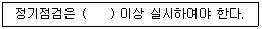
- 매 주 1회
- 매 월 1회
- 매 분기 1회
- 매 년 1회
(정답률: 79%)
75. 토양보전대책에 관한 계획에 포함되어야 하는 사항과 가장 거리가 먼 것은?
- 토지 등의 이용 방안
- 피해 주민에 대한 지원 대책
- 오염토양 개선 산업
- 토양오염 방지 대책
(정답률: 49%)
76. 위해성평가를 하려는 자가 위해성평가 대상지역의 특성을 고려하여 위해성평가 계획서에 포함하여야 하는 사항과 가장 거리가 먼 것은?
- 현장조사 방법
- 오염물질의 노출경로
- 오염범위 및 노출농도
- 독성평가 자료
(정답률: 60%)
77. 다음은 토양정화업자의 준수사항에 관한 내용이다. ( )안에 옳은 내용은?
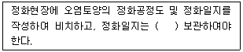
- 1년간
- 2년간
- 3년간
- 5년간
(정답률: 57%)
78. 다음은 토양관리단지 조성계획을 변경 수립하여야 하는 대통령령으로 정하는 중요한 사항에 관한 내용이다. ( )안에 옳은 것은?
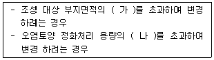
- 가 : 20%, 나 : 20%
- 가 : 20%, 나 : 30%
- 가 : 30%, 나 : 20%
- 가 : 30%, 나 : 30%
(정답률: 75%)
79. 특정토양오염관리대상시설의 종류와 가장 거리가 먼것은?
- 위험물의 제조 및 저장시설
- 송유관 시설
- 유독물의 제조 및 저장시설
- 석유류의 제조 및 저장시설
(정답률: 62%)
80. 토양환경평가를 위한 조사 중 시료의 채취 및 분석을 통한 토양오염의 정도와 범위를 조사하는 것은?
- 개황조사
- 정밀조사
- 기초조사
- 전문조사
(정답률: 84%)